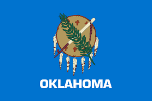

About Me
My name is Blake and I live in Norman, Oklahoma. My hobbies are working on code, reading from the scriptures and hanging out with my friends. I work most days of the week and serve at the Oklahoma City Temple on friday afternoons. I hope to better understand html css and javascript by the end of this course!
Norman, Oklahoma
Oklahoma is the 46th state in the United States of America. Oklahoma's main export is oil and gas, with them producing around 183,000 barrels of oil everyday. Oklahoma is also has over 400 miles of the historic Route 66 and has a museum for tourists to visit to learn more about it. Oklahoma's largest city is located in its center, it being Oklahoma City with a population of 649,021 people. Its second largest city is Tulsa, with a population of 400,669 people.